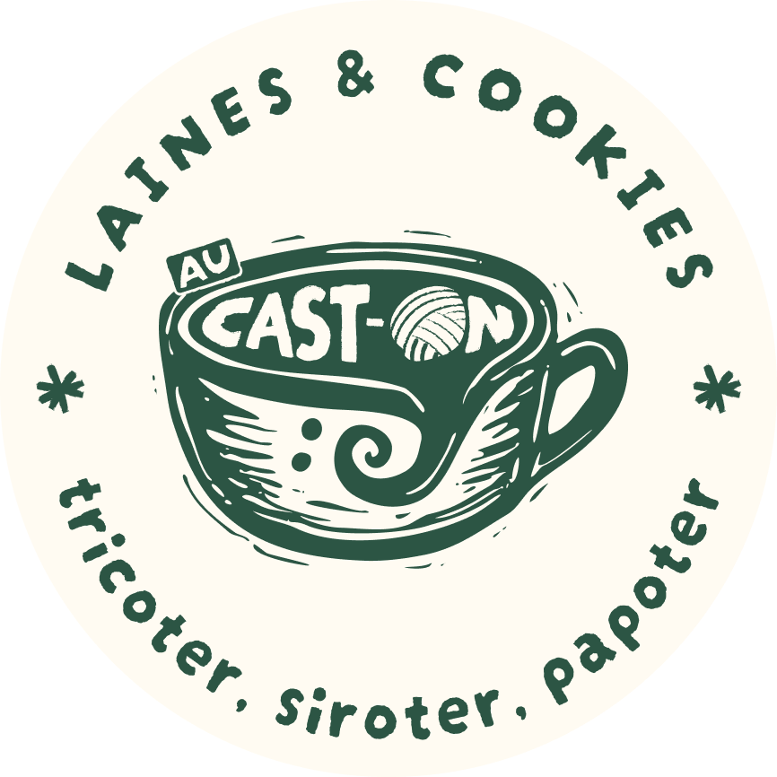

Brand design & Identité visuelle
Logos et déclinaisons, palettes de couleurs, systèmes typographiques en cohérence avec la stratégie de marque.
De la création d'identités visuelles à la conception de supports de communication print et web, je créé des univers graphiques singuliers et cohérents alliant stratégie, esthétique et efficacité.
Logos et déclinaisons, palettes de couleurs, systèmes typographiques en cohérence avec la stratégie de marque.
Application de l'identité visuelle pour les supports déclinés sur tous les formats (affiches, brochures, flyers, visuels pour les réseaux sociaux...).
Systèmes de navigation (panneaux, fléchage, vitrophanie...) pour signaler clairement la marque dans l'espace physique.
Composition de documents (plaquette, rapport, newsletter...) favorisant la lisibilité et l'efficacité.
Icônographie et design de site internet en cohérence avec l'identité visuelle de la marque.
Illustrations vectorielles pour agrémenter l'image de marque et donner du caractère et de l'impact aux supports.
« Très beau travail, on est ravies d'avoir travaillé avec toi :) (...) Ça rend trop bien on est super contentes ! »

Au Cast-On Boutique de laines & salon de thé